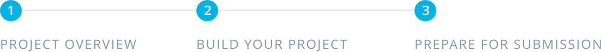

01. Project Overview
Project Overview
Score Keeper App

Project Overview
This project is a chance for you to combine and practice everything you learned in this section of the Nanodegree program. You will be making an app that allows a user to keep track of points within a game.
The goal is to create an Score Keeper app which gives a user the ability to keep track of the score of two different teams playing a game of your choice. To build this project, you can follow along with the practice set and customize the Court Counter app to track scores from a different sport.
Why this project?
In the most recent portion of the Nanodegree program, you learned how to make use of Java in your Android apps to make them interactive. With Score Keeper, you will be practicing this skill set, with particular focus on button code, variable scope, and updating views.
What will I learn?
This project is about combining various ideas and skills we’ve been practicing throughout the course. They include:
- Adding button code to your app
- Updating views
- Properly scoping variables
* Finding views by their ID
Note: As the focus of this program is Java, only projects completed with Java as the source code will be accepted. Projects using Kotlin as the source code will not be accepted.